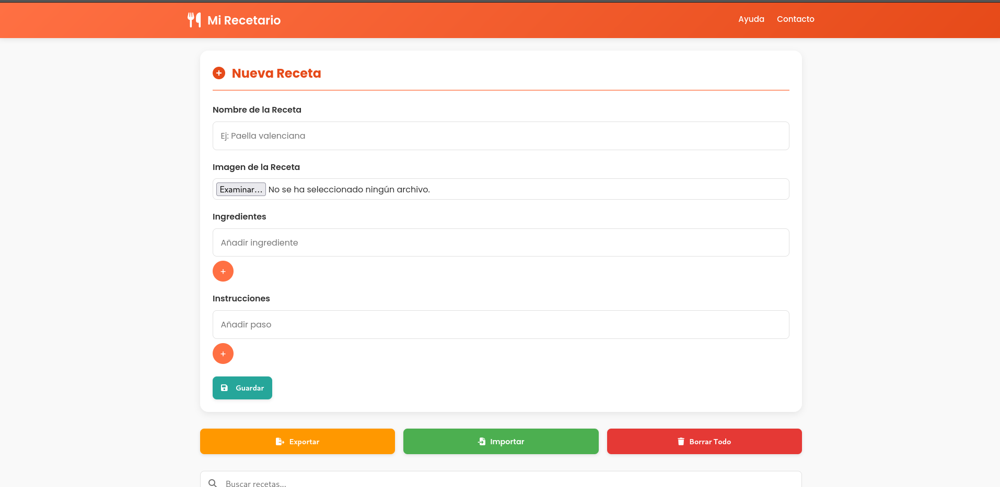
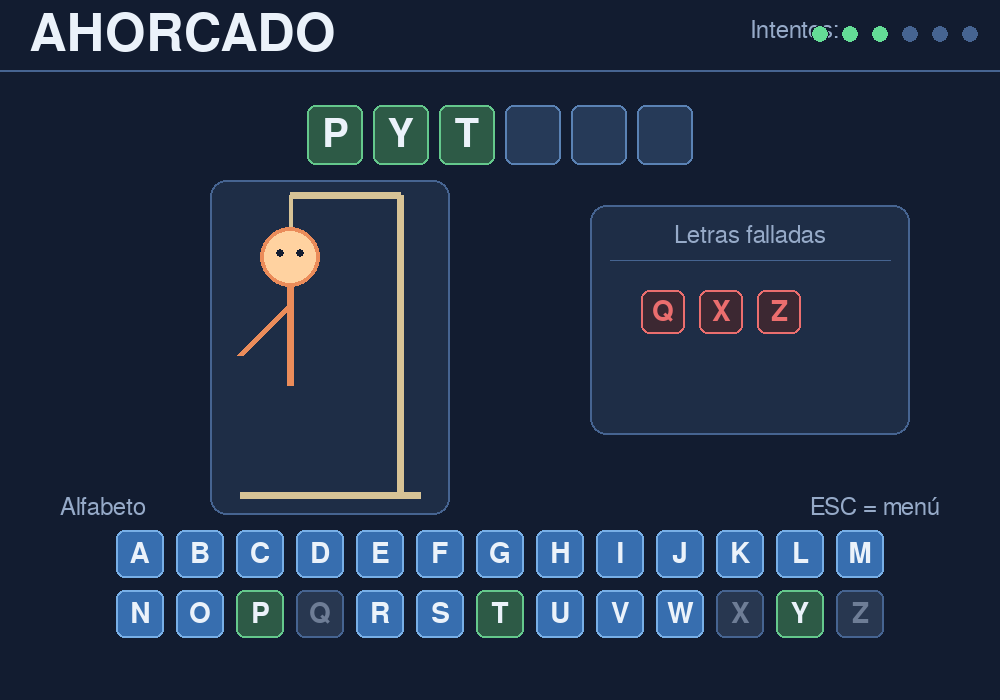
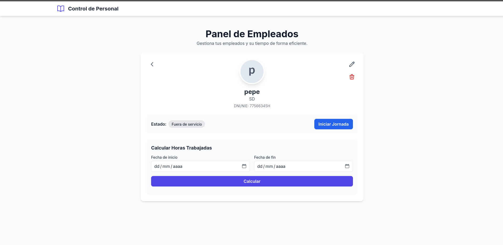

Automatizo procesos,
creo soluciones
SysAdmin (+10 años) + Python Developer. Construyo APIs, automatizaciones y dashboards que generan impacto real.
Sobre Mí
Combino experiencia en sistemas con pasión por Python para crear soluciones que generan impacto real.
Me gusta decir que soy de los que aprendieron haciendo. Sin carrera formal en programación, pero con +10 años como SysAdmin y 2 años en Python (certificado por Google e IBM), combino ambos mundos para crear soluciones que funcionan y escalan.
No busco escribir código que "funcione". Busco crear soluciones que generen impacto real: automatización que ahorra tiempo, APIs que escalan, problemas resueltos.
Stack
Certificaciones
Proyectos
Soluciones reales que generan impacto medible.

PWA
PygameAhorcado
Juego del ahorcado con interfaz gráfica profesional en Python usando Pygame. Adivina la palabra antes de agotar los 6 intentos, con soporte para mouse y teclado.

Web AppControl Horario
App web para el control horario de trabajadores con registro de entradas y salidas.
¿Hablamos?
Disponible para nuevos proyectos de automatización, APIs y dashboards. ¡Vamos a crear algo juntos!
ricardoespineiradiaz@gmail.com
WhatsApp